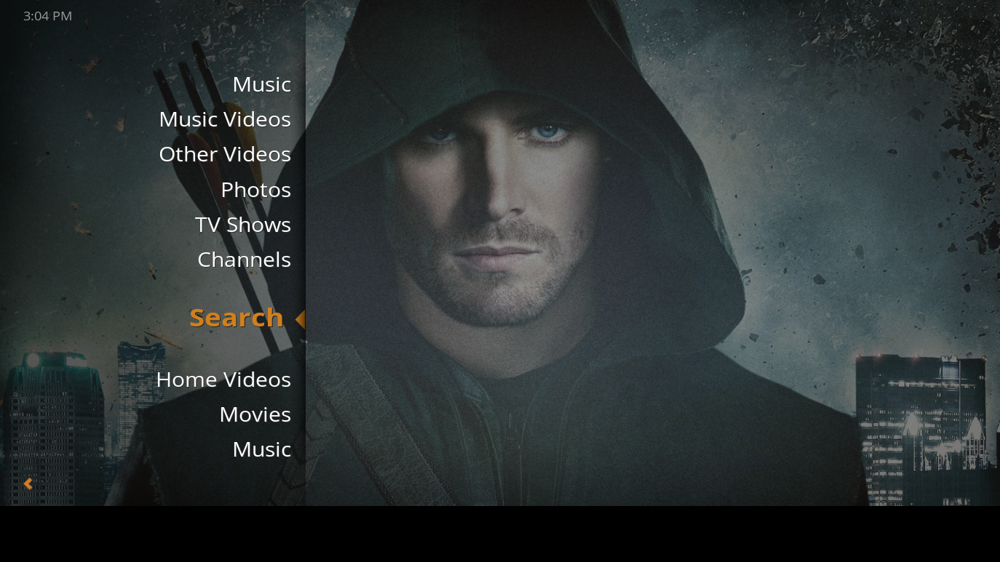

Your Videos and Pictures
Browser, Play, and Share your Videos and Pictures. Watch or view your videos and pictures on your smartphone, tablet, or TV.
Blox uses Plex media server for its backend in Video and Photo serving. Plex lets you browse, play, and share using Internet browser from your desktops or smartphones.
Storing Videos or Pictures
The first thing to do is to store your videos or pictures. You can store your Videos and Pictures in the File Server.
Open your file server using your desktop or smartphone.

- If you want to store your picture.
- Copy the picture you want to store.
- Open the Picture folder in the file server.
- Paste the picture.
- If you want to store your Videos.
- Copy the Video you want to store.
- Open the Videos Folder in the File Server.
- Paste the Video
Accessing your Media Server
Your Media Server can be accessed using the internet browser of your desktop or smartphones. You can also use applications such as Plex home theater or XBMC to access your media server.
Accessing though Internet Browsers
- Go to Blox’s Home page.

- Click or tap the icon of Video.

Accessing through Application
You can use Plex Home Theater in Blox which can be remotely controlled using your smartphone.
- On the Blox Computer click on th icon of Plex Home Theater
- 
If you are using windows you can download `Plex Home Theater<http://blackbox.local/static/others/pht.exe>`_
Android Phone for Remote Control
There is an app available that can remote control Plex Home Theater. You can also watch videos using this application.
- Download the Plex for Android link [http://www.google.com]